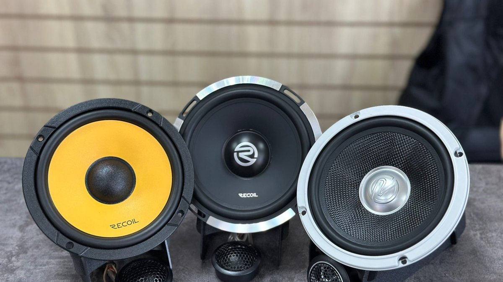

Новый Haval H3, первые недели. Машина нравится: высокая посадка, большой экран, на ярославских ямах не трясёт. Вы подключаете телефон, включаете свой плейлист и через пару минут ловите себя на странном ощущении. Звук есть, громкости хватает, а музыки нет. Бас тонкий, голос словно идёт из одной точки посередине панели, на громкости в дверях появляется дребезг.
Это не брак и не ваш телефон. Так звучит штатная акустика, собранная под цену, а не под музыку. Замена динамиков Хавал Н3 решает это по частям: двери, центральный динамик в панели, при желании сабвуфер. Ниже разбираем, что стоит в машине с завода, что даёт каждая замена и в каком порядке делать, чтобы не переплатить.

Почему штатный звук в Haval H3 кажется пустым
«Пустой» звук складывается из трёх причин, и только одна из них – сами динамики.
Динамики. Заводская акустика в машинах этого класса обычно простая: бумажный диффузор, лёгкий магнит, пластиковая корзина. Такой динамик чисто играет на тихой громкости и сдаётся, когда вы прибавляете: диффузор гнётся, звук размазывается.
Двери. Дверь – это корпус колонки. С завода она почти голая: тонкий наружный металл, технологические отверстия во внутренней панели, пластиковая обшивка на защёлках. Бас уходит через отверстия, металл и пластик гудят и трещат.
Настройка мультимедиа. Штатная система обрабатывает звук под свои динамики: где-то режет низ, чтобы они не хрипели, где-то поднимает середину. Отсюда ощущение «громко, но плоско».
Поэтому смена одних колонок без дверей и без настройки даёт меньше, чем ожидают. Хорошая новость в том, что все три причины лечатся, и необязательно сразу.
Центральный динамик в панели: зачем он и что с ним делать
В верхней части торпедо, под решёткой посередине, стоит небольшой динамик. Его задача – собрать звук перед водителем и пассажиром в одну точку, чтобы голос не «сидел» в левой двери. В штатной системе он играет середину и часто именно он отвечает за то самое ощущение звука «из одной точки».
Запрос «хавал н3 замена динамика в панели» обычно приходит от тех, у кого этот динамик начал хрипеть или дребезжать на громкости. Причины простые: маленький бумажный диффузор, тонкий подвес, плюс зимой пластик панели и решётка твердеют и начинают отвечать на вибрацию.
Варианта три.
- Заменить на динамик того же размера получше. Ставится в штатное место, звук становится чище, центр сохраняется. Нужно совпасть по посадочному размеру, глубине и сопротивлению, иначе мультимедиа может повести себя непредсказуемо.
- Заменить и проклеить решётку и место посадки. Если хрип на самом деле дребезг пластика, одной замены мало: решётку и посадку обрабатывают антискрипом и тонким вибропоглотителем.
- Встроить в фронт пищалки и оставить центр как поддержку. Если делаете компонентную акустику в передних дверях с пищалками выше, центральный динамик либо оставляют тихим, либо меняют вместе с фронтом, чтобы он не спорил с новыми пищалками по тембру.
Одна практическая деталь. Решётку центрального динамика снимают, отщёлкивая клипсы. На морозе пластик торпедо хрупкий, и клипса или ушко ломаются легко. Эту работу делают в тёплом боксе и специальным инструментом, а не отвёрткой на парковке у дома.
Замена центрального динамика Хавал Н3: на что смотреть при выборе
Прежде чем покупать, проверьте три вещи.
1. Размер и глубина. Под панелью мало места, рядом идут воздуховоды и проводка. Динамик с крупным магнитом может не встать.
2. Сопротивление. Новый динамик должен совпадать со штатным, иначе усилитель мультимедиа будет работать в непривычном режиме.
3. Подключение. Через переходник на штатный разъём, без отрезания проводки. Это сохраняет возможность вернуть всё как было.
Если вы не уверены, как устроена штатная система в вашей комплектации, начните с осмотра: мастер снимет решётку, посмотрит, что стоит и как подключено, и только потом подберёт замену.
Двери: где на самом деле прячется бас
Передние двери дают больше всего пользы за свои деньги, если делать их правильно. Именно они формируют звук, который слышит водитель: голос, гитару, удар бочки. Что входит в работу.
- Динамики. Коаксиальные ставятся в штатное место и сразу звучат чище. Компонентные с отдельной пищалкой поднимают звук выше, на уровень лобового стекла, и тогда центральный динамик уже не так нужен.
- Проставочные кольца. Посадка у штатного динамика своя, у универсального – другая. Кольцо выравнивает и закрывает щель. Материал – пластик или влагостойкий, потому что в двери всегда сыро: туда стекает вода со стекла и снег в оттепель.
- Виброизоляция. Вибропоглотитель на наружную панель напротив динамика, закрытие технологических отверстий во внутренней панели, антискрип на обшивку.
- Тяги и проводка. Их фиксируют, чтобы на басу не стучали о металл.
Как понять, что двери у вас «пустые», без разборки: включите трек с плотным басом, прибавьте громкость и положите ладонь на обшивку рядом с динамиком. Если пластик заметно вибрирует, а бас при этом слабый, энергия уходит в дверь, а не в звук.
Задние двери у Haval H3 для водителя менее важны: их в первую очередь слышат пассажиры. Если бюджет ограничен, его разумно отдать передним, а задние поменять позже.

Мультимедиа: почему новые динамики могут зазвучать неожиданно
Штатная мультимедиа Haval H3 настроена под заводские динамики. Когда вы ставите новые, у них другая чувствительность и другой характер. Результат бывает разный: где-то сразу стало лучше, где-то звук стал резким или, наоборот, тише.
Что с этим делают.
- Эквалайзер в меню. Первое, что пробуют. Иногда его хватает, чтобы убрать резкость и вернуть низ.
- Динамики с высокой чувствительностью. Если усилителя не будет, это главный параметр выбора. Динамик, рассчитанный на мощный усилитель, от штатной мультимедиа будет играть вяло.
- Процессор или усилитель с процессором. Подключается к штатной системе через переходники. Позволяет настроить каждую линию отдельно, убрать заводскую обработку и выставить задержки, чтобы звук собрался перед водителем. Это шаг для тех, кто хочет не просто «нормально», а действительно хорошо.
Магнитолу при этом можно не менять. Штатный экран, камера, настройки машины остаются как были.
Сабвуфер Haval H3: нужен ли он сразу
Сабвуфер – последний шаг, а не первый. Пока передние двери не подготовлены, сабвуфер будет закрывать дыру в нижней середине, и бас получится оторванным от музыки: гудит сзади отдельно от всего остального.
Когда двери сделаны и хочется глубины, варианты такие.
- Активный сабвуфер под сиденье. Плоский корпус с встроенным усилителем. Багажник не занимает. Даёт мягкую «подложку» под музыку, но не глубокий бас.
- Стелс в нише багажника. Корпус из стеклоткани повторяет форму боковой ниши и закрывается штатной обшивкой. Багажник остаётся свободным, бас глубже, чем у подсидельного.
- Короб в багажнике. Больше всего баса, но и больше всего занятого места. Для машины, которая возит дачу и сумки, часто неудобно.
Подключение к штатной системе идёт через высокоуровневый вход сабвуфера или преобразователь уровня, а питание – отдельным проводом от аккумулятора с предохранителем.
Ошибки, которые повторяют чаще всего
- Поменять центральный динамик и ничего не сделать с дребезгом решётки. Хрип останется, потому что это был пластик.
- Купить мощные динамики с низкой чувствительностью под штатную мультимедиа. Стало тише.
- Поставить динамики в двери без колец и без обработки. Чище, но бас так и не появился.
- Начать с сабвуфера. Бас есть, музыки по-прежнему нет.
- Снимать панель на морозе. Сломанные клипсы потом скрипят всю зиму.
Частые вопросы
С чего начать, если бюджет небольшой? С передних дверей: динамики, кольца, виброизоляция напротив динамика, антискрип обшивки. Это самая заметная разница с водительского места.
Хрипит центральный динамик – это он сгорел? Не обязательно. Часто дребезжит решётка или пластик вокруг посадки. Сначала проверяют, что именно звучит, и только потом меняют.
Сохранится ли гарантия на новую машину? Для нового автомобиля важно, чтобы работу делала студия с сертификатами на установку. Уточните это у мастера до начала работ и заберите документы.
Сколько стоит замена динамиков на Хавал Н3? Стоимость складывается из динамиков, колец и переходников, объёма работы с дверями и панелью, настройки. Её называют после осмотра, когда понятна комплектация и цель.
Можно сделать всё по шагам? Да. Фронт, потом центр и настройка, потом сабвуфер. Каждый шаг слышно отдельно.
Где заменить динамики Haval H3 в Ярославле
Студия «Звук на Волге», Ярославль, проспект Октября, 82б. Пн–пт 8:30–20:00, сб–вс 10:00–19:00. Для нового автомобиля можно не переживать за дилерскую гарантию: у студии есть необходимые сертификаты. Динамики можно послушать на стенде в студии до покупки, а после установки приехать сменить настройки или задать вопрос.
Подробнее и запись: автозвук для Haval H3 в Ярославле. Телефон +7 902 220-75-55, сообщения в ВК: vk.me/avtostil_yaroslavl.
Если вы знали нас как «Автостиль» – это мы. Студия обновилась и, раз занимается звуком в Ярославле, теперь называется «Звук на Волге», на том же месте.